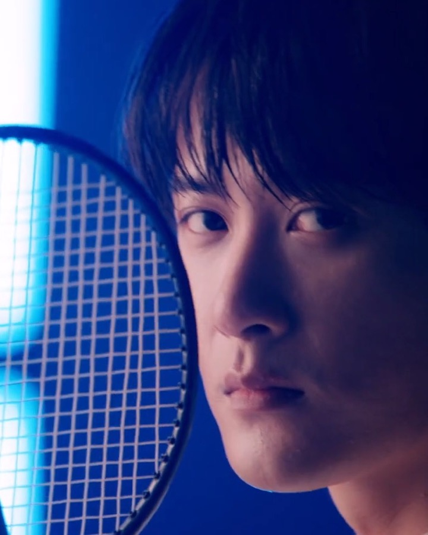
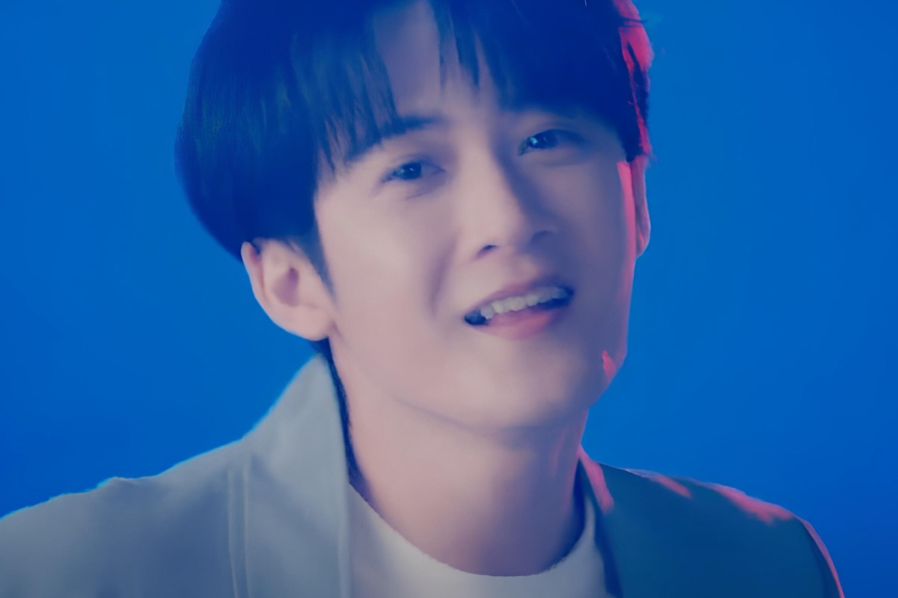

Unofficial Fan-made Frontend
给小炭火的，
应该是一页被黄色灯海照亮、
也能随时切进相柳专题的首页。
这一版我把方向改成“照片优先、收藏感排版、轻盈发光动画”：不是冷冰冰的概念稿，而是更像一张能让粉丝停下来反复看的电子应援册封面。

小炭火收藏夹
Photo-led redesign
今天也被帅到的一天

黄海会亮，心情也会亮
首页不只是展示，而要像粉丝会存进相册里的电子卡册封面。
所以我补了一层“拍立得收藏卡”视觉，让首页更像能停留、能截图、能转发的粉丝内容页，而不是一个只是能浏览的普通网站。
檀健次 · 小炭火 · 收藏感首页 · 照片优先 · 更轻盈的动画 · 更柔和但不廉价的发光感 · 适合继续做应援站
檀健次 · 小炭火 · 收藏感首页 · 照片优先 · 更轻盈的动画 · 更柔和但不廉价的发光感 · 适合继续做应援站
Photo Gallery / 角色专题预备位
先让照片成为情绪中心，再把这里预留成相柳或谢却山的专题主视觉位。
首页应该先抓住“想保存、想转发、想继续往下看”的感觉，所以我把核心信息让位给照片、留白和更舒服的光感。
把“喜欢的人”放在页面最前面，而不是把设计概念放最前面。
你说得对，之前那版太冷、太像模板提案。现在这版会更像电子收藏页：照片先出现，文案变短，氛围更柔和，动画只做“烘托”而不是抢镜。

- 更多授权照片做成九宫格/长图册
- 作品页改为海报墙式布局
- 舞台页加更细的光带和滚动章节
- 小炭火页接留言或活动报名
谢却山这一组主图我还在继续找，但目前只先用了授权清晰的公开照片。
我查了谢却山相关图片来源，但暂时没找到“能放心直接放进仓库并上线”的明确可复用剧照。为了不把版权风险带进项目，我先用已确认可复用的檀健次照片撑起主视觉，同时把整体风格先改到小炭火黄海这条线上。
如果你给我官方剧照文件，或者确认可使用的宣传图链接，我可以下一轮直接把首页主图全部替换成谢却山专题视觉。
Role-ready Shell
如果后面拿到相柳或谢却山授权剧照，这一套首页可以直接切成角色专题版。
我已经先把结构做成“照片主导 + 大标题 + 情绪注释 + 收藏式卡片”的壳，所以后面换角色图，不需要再从头推翻界面。
更冷、更锋利、更有月光感
只要换主图和几处文案，就能切到更偏相柳的冷艳专题。
更古雅、更沉静、更像角色海报
黄色主氛围保留，局部加酒红和墨色就能承接角色感。
先用授权清晰照片垫住主视觉
这样页面能先上线，不必因为主图版权问题卡住整体进度。
删掉“硬概念”，换成“柔亮、可收藏、会发光”。
标题更像杂志封面，照片像收藏卡，背景像灯光不是像程序界面，整体更适合粉丝站。
慢一点，轻一点，像呼吸，不像炫技。
我把动画改成漂浮、缓入、跑马灯和照片微倾斜，减少生硬 reveal 和厚重科技感。
这只是第一轮审美纠偏。
下一轮我可以继续把作品页和小炭火页一起按这个方向全部重做统一。
当前站点主题色已改为小炭火常见的黄色系应援氛围；图像仍使用已确认可复用的 Wikimedia Commons CC BY 3.0 图片。